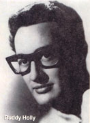
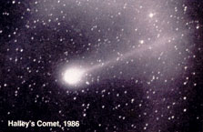

FEBRUARY
1 FIRST QUARTER MOON, 9:02 A.M. EST; brilliant Venus sets maximum of almost four hours after sun; Jupiter-Saturn-moon in line tonight; RCA issued first 45 rpm phonograph record, 1949.
2 Groundhog Day (in Canada, a bear is sometimes substituted for the groundhog); Candlemas; moon below Jupiter this evening; city of New Amsterdam - later to be called New York - incorporated this day in 1653; writer James Joyce born, 1882; baptism date of William Shakespeare's twin children, Hamnet (yes, not Hamlet - Hamnet) and Judith, in 1585.
3 Temperature hit 27°'F in downtown Miami, 1917; Norman Rockwell, American painter and cultural icon, born in 1894; "The day the music died"-this day in 1959, a plane crash killed young rock and roll stars including Buddy Holly, Richie Valens and J.P Richardson, aka "The Big Bopper."
4 Today/tomorrow is mathematical halfway point of winter.
6 Ascension of Queen Elizabeth II to throne, 1954; Alan Shepard hits golf balls on the moon (Apollo 14, 1971); Babe Ruth born, 1895.
7 Charles Dickens born, 1812.
8 FULL MOON, 2:12 A.M. EST; Snow, hunger or wolf moon; Mary Queen of Scots beheaded by order of Queen Elizabeth I, 1587; general William Tecumseh Sherman born, 1820; fantasy writer Jules Verne born, 1828.
10 Queen Victoria of England married Prince Albert of Saxe-Coburg-Gotha (1840).
11 Septuagesima Sunday; temperature hit -61 ° F in Montana this day in 1899; Thomas Alva Edison born, 1847.
12 Lincoln's Birthday; Georgia Day.
14 LAST QUARTER MOON 10:23 PM. EST; St. Valentine's Day; Mars just below the moon tomorrow morning before dawn.
15 Susan B. Anthony's Birthday (holiday in Florida and Wisconsin); U.S. battleship Maine sunk, 1898; Galileo Galilei born, 1564; Lupercalia, ancient Roman festival of fertility and fruitfulness; President FDR almost killed when a fanatic fired at him and killed Mayor Anton J. Cermak of Chicago, 1933.
19 Presidents Day; Nicolaus Copernicus born, 1473.
20 Mars (brightest object in south at dawn) very near star Beta Scorpii tomorrow; John Glenn became first American to orbit Earth, 1962; Mir space station launched this day in 1986 (at the time of the present writing, the Russians are planning to bring the ailing Mir crashing down from orbit into the ocean, 15 years after its launch).
21 Venus is at maximum brightness for the next week or so, and is at its greatest illuminated extent tonight (see article for more details on spectacular sights of Venus in February and March 2001); Washington Monument dedicated, 1885.
22 Washington's Birthday.
23 NEW MOON, 3:21 A.M. EST; Iwo Jima Day - American flag raised on Mount Suribachi in Iwo Jima by U.S. Marines, 1945.
25 Moon lower left of Venus this evening.
26 Moon left of Venus this evening; Grand Canyon National Park established, 1919.
27 Shrove Tuesday; Mardi Gras.
28 Ash Wednesday, start of Lent (which continues until Easter); crooked line of moon-Jupiter-Saturn in evening sky.
MARCH
1 Venus still sets more than three hours after the sun; tight grouping of moon, Jupiter and Saturn tonight and tomorrow night; Yellowstone National Park, first park of its kind in the world, established, 1872; Peace Corps established by JFK, 1961.
2 FIRST QUARTER MOON, 9:03 P.M. EST; Texas Independence Day, 1836.
5 Boston Massacre (British troops attacked colonial citizens, 1770).
6 Alamo Day (end of the siege of the Alamo, 1836) in Texas; birthday of Michelangelo (1475).
7 Alexander Graham Bell granted patent for telephone, 1876.
8 Commonwealth Day in United Kingdom.
9 FULL MOON, 12:23 PM. EST; Sap, crow or Lenten moon; Napoleon married Josephine de Beauharnais (1796); Battle of ironclad ships Monitor and Merrimac , 1862.
10 Harriet Tubman Day (the famous abolitionist and organizer of the Underground Railroad for slaves died this day in 1913).
11 Johnny Appleseed Day (John Chapman, patron saint of American orchards, died this day in 1845).
12 Girl Scout Day (Girl Scouts founded, 1912).
13 This day in 1639, Harvard University named for clergyman John Harvard.
14 Moon forms triangle with golden-orange planet Mars and golden-orange star Antares before dawn tomorrow and day after tomorrow; European Space Agency spacecraft Giotto flew closest to nucleus of Halley's Comet this day 15 years ago; Einstein born, 1879.
15 Andrew Jackson Day in Tennessee (Jackson, seventh President of the U.S., born this day in 1767); Ides of March (Julius Caesar assassinated, 44 B.C.); Buzzard Day - traditional day that the buzzards return to Hinckley, Ohio for mating season.
16 LAST QUARTER MOON, 3:45 PM. EST; first flight of a liquid fueled rocket 75 years ago today, by Robert Goddard; two tornadoes, 24 minutes apart, hit Baldwin, Mississippi, killing 65 people (1942).
17 Saint Patrick's Day.
18 First spacewalk, by Aleksei Leonov (1965).
19 Swallows come back to San Juan Capistrano in California; National Agriculture Day.
20 VERNAL EQUINOX, 8:31 A.M. EST, start of spring in Earth's northern hemisphere - the sun rises due east and sets due west, day and night are of equal length; Sir Isaac Newton dies at age of 84 (1727).
21 J.S. Bach born, 1685; Children's Poetry Day (observed in many nations).
22 Venus now sets only an hour and 15 minutes after the sun; Comet Hale-Bopp closest to Earth, 1997.
23 At this time 15 years ago Halley's Comet was most visible in northern hemisphere - the next return should be brighter and is now a mere 60 years away...!
24 NEW MOON, 8:21 P.M. EST; Exxon supertanker Valdez spilled 240,000 barrels of oil into Prince William Sound in Alaska this day 12 years ago.
25 Venus rises 20 minutes before the sun and sets 40 minutes after the sun (around 40° N) - so today and for the next few days many of us could get the rare chance to see Venus both before sunrise and after sunset on the same day (see article for details).
26 American poet Robert Frost born this day in 1874; Islamic New Year (start of year 1422).
27 Great Alaskan Earthquake, 1964; U.S. Navy established, 1794.
28 Moon appears lower left of Saturn at dusk; great Three Mile Island nuclear accident this day in 1979.
29 Vietnam Veterans' Day (this day in 1973, U.S. troops withdrew from Vietnam).
30 Venus, at inferior conjunction with the sun, nevertheless rises 40 minutes before sun today; first use of ether as an anesthetic, 1842, by Dr. C. W. Long.
31 Cesar Chavez Day in California.
|
 |
 |
|